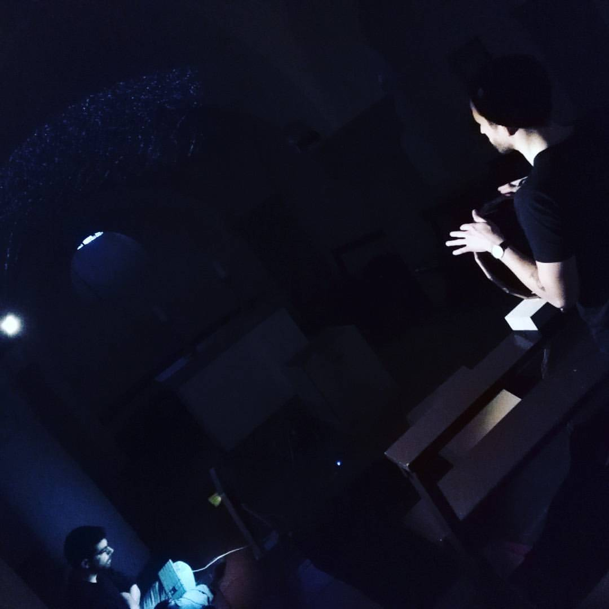

About
Stefano Catena (b. 1992) is a composer, researcher and classical pianist. He creates multichannel music, multimedia works and installations, mixing his experience with acoustic instruments, computer programming and analog/digital synthesis. A major focus in his work has been the tight integration of spatiality in his compositional workflow and the creation of theoretical frameworks for the analysis of spatiality in music. He's also interested in new digital and analog production of sound: from modular synthesis, to embedded audio programming and algoritmic composition.
He completed his Bachelor and Masters degree at Milan's Conservatory in Electronic Music under the supervision of Giovanni Cospito and Sylviane Sapir with 110/110 cum laude with his thesis "The Virtual Acousmonium: a study on expressiveness of musical gestures". He also won a scholarship to study in the USA at Montclair State University (NJ) with Nathan Davies and Marcos Balter and an Erasmus grant at the Hochschule für Music in Detmold with Fabian Levy, Andrea Valle and Aristotelis Hadjakos. His works have been included and performed in some of the most important international conferences such as Sound and Music Computing (SMC), Colloqui d'Informatica Musicale (CIM), the New York City Electroacoustic Music Festical (NYCEMF) Nova Contemporary Music Meeting (NCMM) in Lisbon, Living Lab Music in Venice, NoiseFloor in Stoke-on-Trent.
Stefano is currently pursuing a PhD in Music, Technology and Innovation - Institute for Sonic Creativity (MTI^2) at DeMontfort University under the supervision of Dr. Peter Batchelor and Leigh Landy, in conjunction with the University of Birmingham and Scott Wilson. His research focuses on the creation of a vocabulary for sound movement and placement through case studies, listening tests and acousmatic composition. This research is currently funded and supported by the AHRC Midlands4Cities Doctoral Training Partnership.
Working with 8 channel ring in HfM Detmold, Germany - 2016

Installation in Cologne during Design Week - The Code - 2017